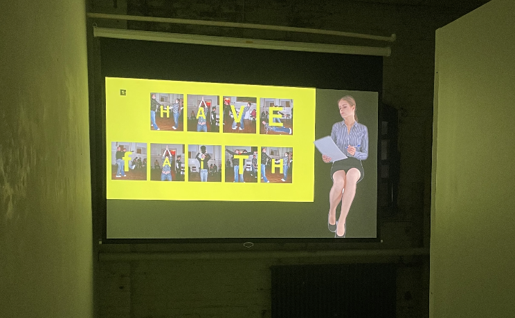
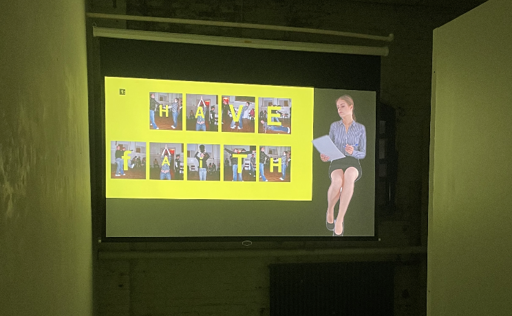

WRITING
Now
Is
Perfect
Timing
wOoooooooooah
Nelly
Girlstrip"


EDITING
November Magazine: (Proofreading and fact checking)
Jaamil Olawole Kosoko, Black Body Amnesia: Poems and other Speech Acts (2022)
JJJJJerome Ellis, The Clearing (2021) (Proofreading)
Web Text: I Could Smile for a While by Niptong Random Man Editions (2024)
Now
Is
Perfect
Timing
wOoooooooooah
Nelly
Girlstrip"
D is for DIALOGUEDIALOGUE, DUPLIKATE Random Man Editions (2024)

LUCKY STAR LOVE THEORY No Bounds Radio (2024)
IN CASE OF EMERGENCY Parent Company Gallery: Speedo International Unlimited (2023)
WHISPERING AS WISHFUL THINKING Public Parking (2023)
RELEASE OLD ENERGY SO THAT BLESSINGS CAN ARRIVE screen_ (2023)
EDITING
November Magazine: (Proofreading and fact checking)
Hua Hsu and Arthur Ou
Keller Easterling
Thelma Golden
Lucy Sante
Adrienne Edwards
Laurie Simmons and Drew Sawyer
Laurie Simmons and Drew Sawyer
Jaamil Olawole Kosoko, Black Body Amnesia: Poems and other Speech Acts (2022)
JJJJJerome Ellis, The Clearing (2021) (Proofreading)
PROJECTS
Editorial Fellow at November Magazine (2023)
Public Engagement and Development Associate at Electronic Arts Intermix (EAI) (2021-Present)
Summer School 2023 at Kunstverein München, "Publish" Working Group with Manuel Arturo Abreu & Maurin Dietrich
In conversation with Darrin Martin at EAI for (Mis)Reading the Image: Selections by Darrin Martin (2023)
newart.city Accessibility Steward (2022)
newart.city Festival Curatorial Panel (2022)
Full scholarship recipient, Dark Matters at SFPC taught by American Artist and Zainab Aliyu (2022)
Editorial and Programs Fellow at Wendy's Subway (2021)
Editorial Fellow at November Magazine (2023)
Public Engagement and Development Associate at Electronic Arts Intermix (EAI) (2021-Present)
Summer School 2023 at Kunstverein München, "Publish" Working Group with Manuel Arturo Abreu & Maurin Dietrich
In conversation with Darrin Martin at EAI for (Mis)Reading the Image: Selections by Darrin Martin (2023)
newart.city Accessibility Steward (2022)
newart.city Festival Curatorial Panel (2022)
Full scholarship recipient, Dark Matters at SFPC taught by American Artist and Zainab Aliyu (2022)
Editorial and Programs Fellow at Wendy's Subway (2021)